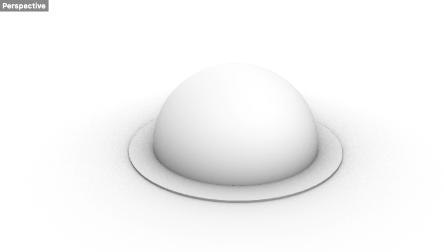
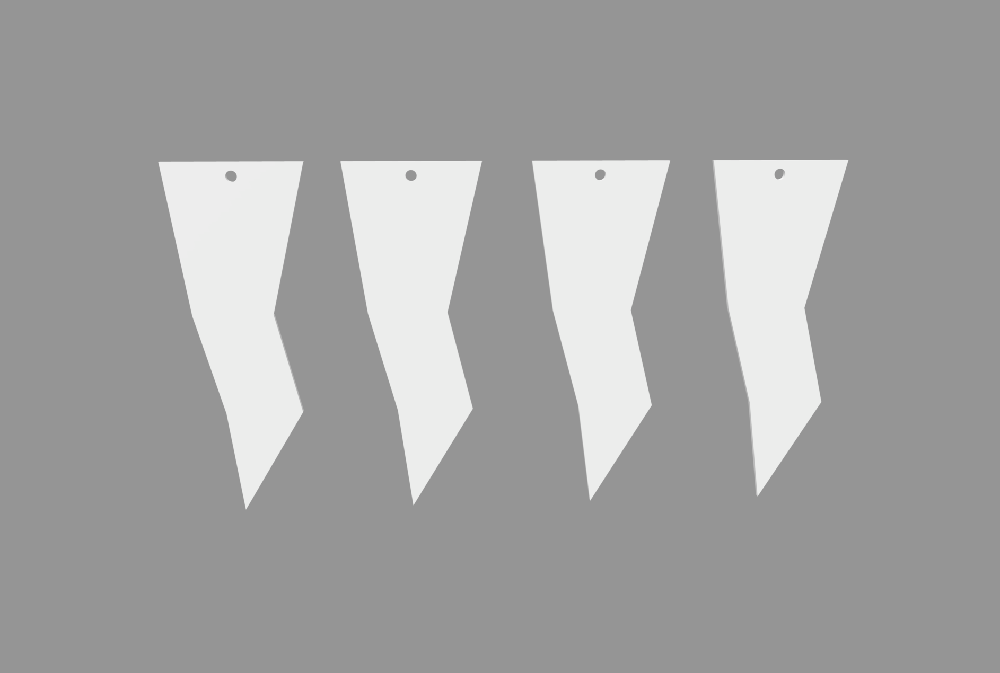
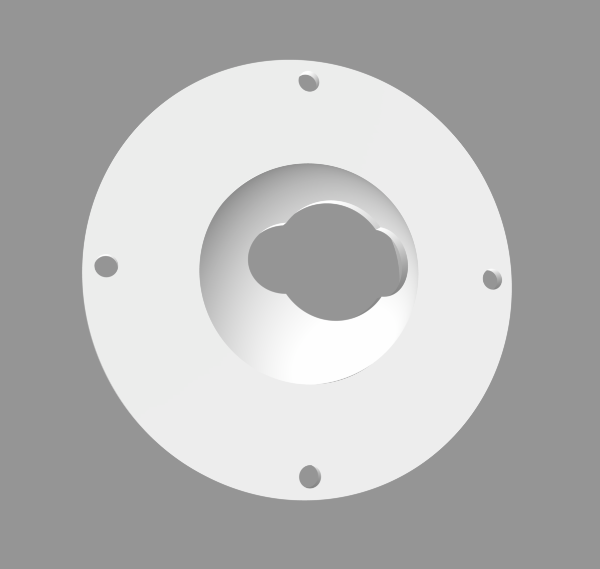
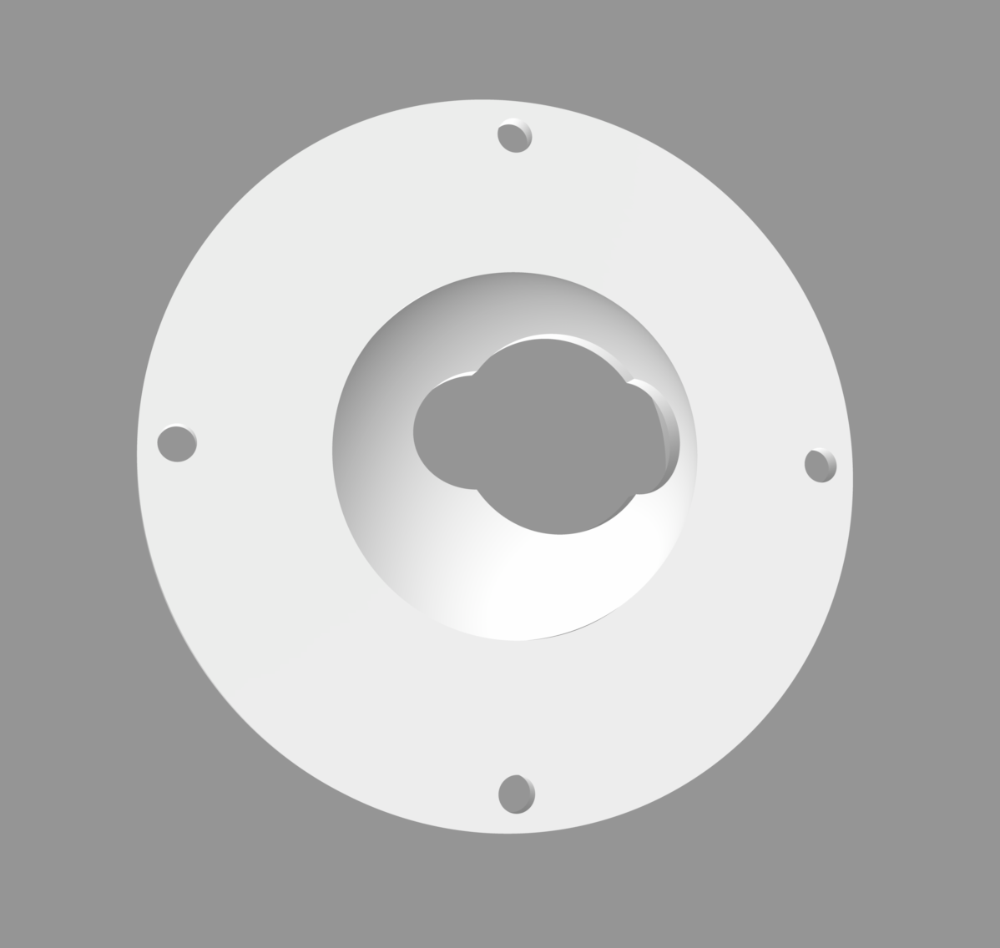
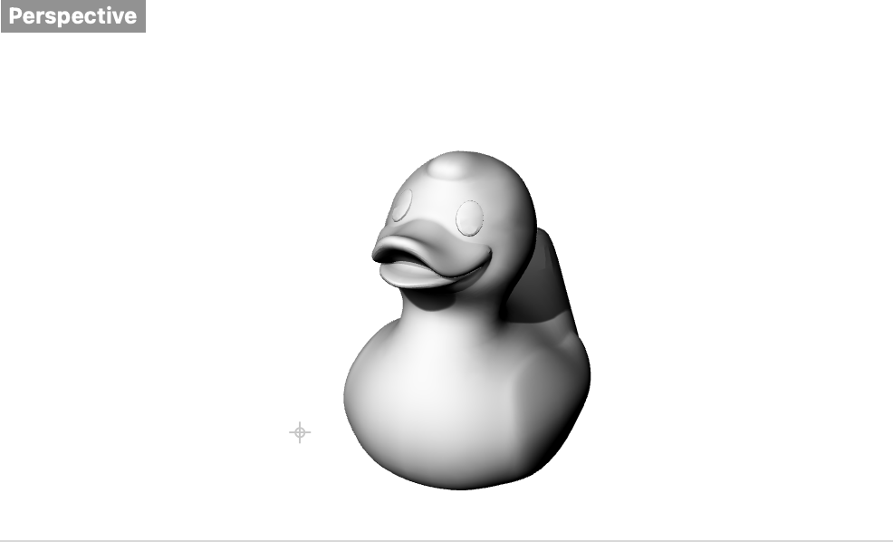
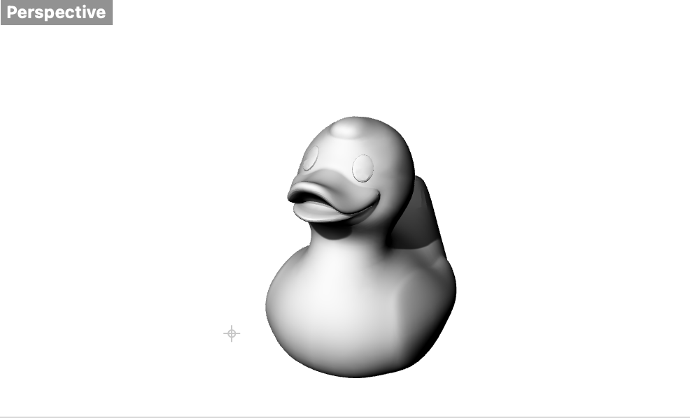
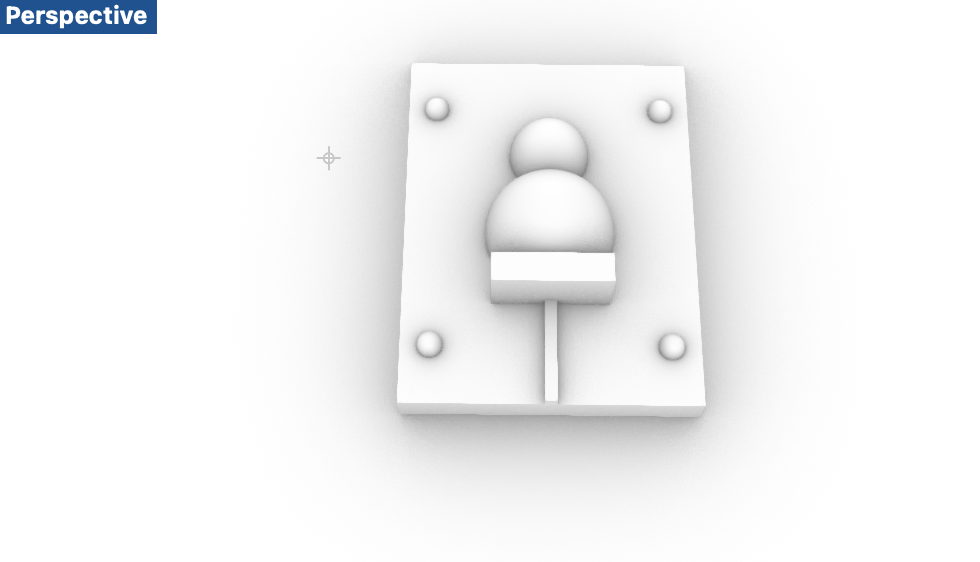

A5! Lamps part 2! And molding and casting part 1!
Part 2 - Lamps
Part 1 of this assignment was about creating and assembling the lamp.
As a recap, I wanted to create a dome as my lamp innerd. Then, I wanted to create attachments that could be attached around the base. I wanted the attachments to be sustainable, such as recycled rubber bands.

This week I finished up the base and the attachments. For the attachments, instead of just using rectangular pieces, I wanted to do something more fun by creating lightning shaped structures. I did this quickly by using the segment tool and extruding the surface.

Afterwards, I went to the MILL to print my objects. I first printed the base with the following settings: 80% speed, 60˚ bed temperature, and 215˚ filament temperature. This was because my structure was dome-like, and I had bad experiences with these curved, unstructured shapes. Through research, I was able to find that lowering the speed and temperature could help avoid failure.

However, I shortly realized I made a mistake. The hole on top of my base was not big enough to fit the end of the cord. I tried cutting the object to make space, but I ended up breaking the top... Therefore, I quickly worked on scaling the object and creating a bigger circle to accomodate for the end of the cord.

I first measured the end of the cord to create the minimum space needed to fit the end of the cord. Then, I first scaled the object by 120% and created some space horizontally specifically for the cord.

 

I printed the new objects and the new base had no issues. Here are some photos of the attachements.

As planned I assembled the lamp using reusable rubber bands. I realized the bottom part of my attachments were too thin to block out the light, and so if I had more time, I would also think of either using a shape that also has a wider bottom. Alternatively, I could attach more attachments around my lamp.


Part 2
Part 2 of this assignment was about starting my molding and casting. To begin, I created the object that I wanted to mold, which is a rubber duck that I found on Thingiverse.
 

Next, I worked on creating the meta-mold (the mold that I would use to create the mold). However, during this stage, I experienced problems, which made me diverge ideas to a new idea.

Credit
Thank you to Junchao's presentation and help during office hours.